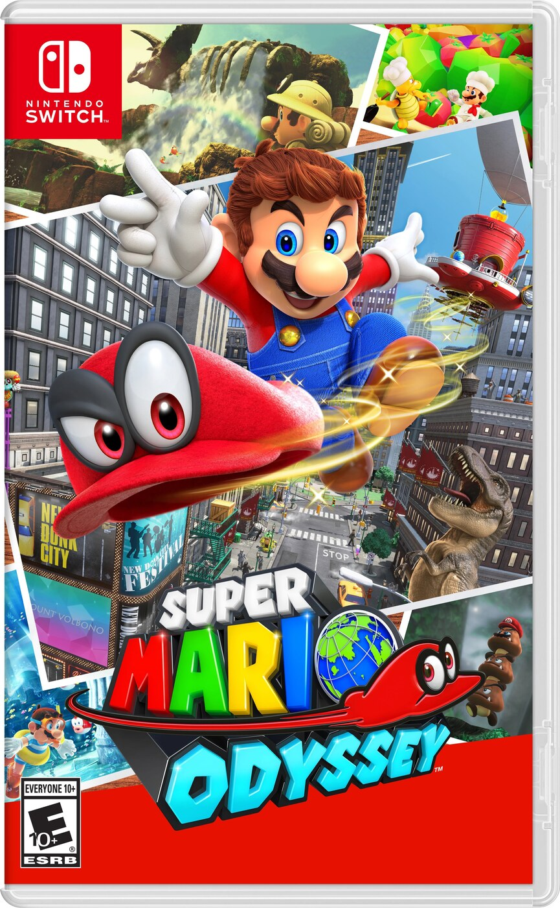
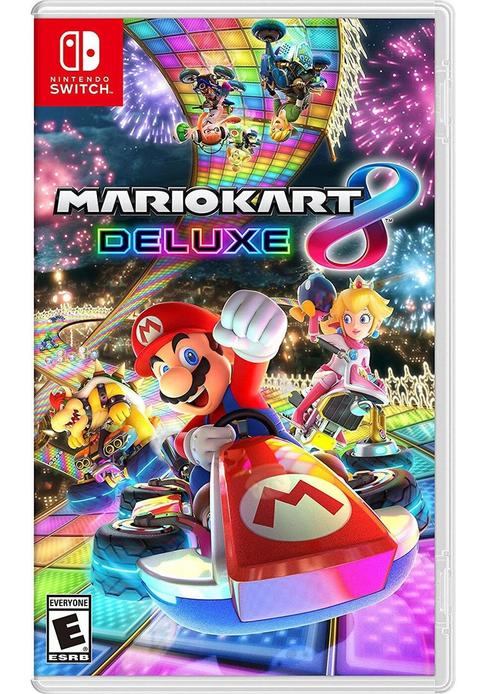
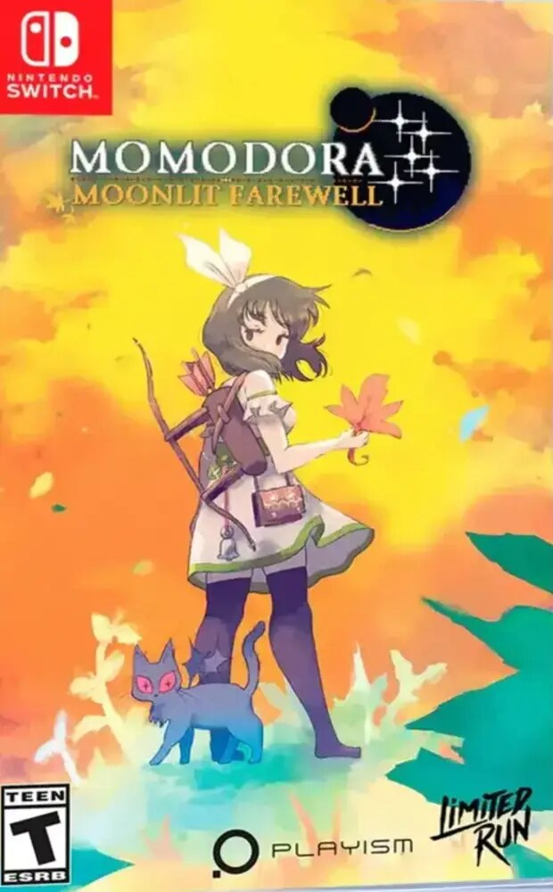
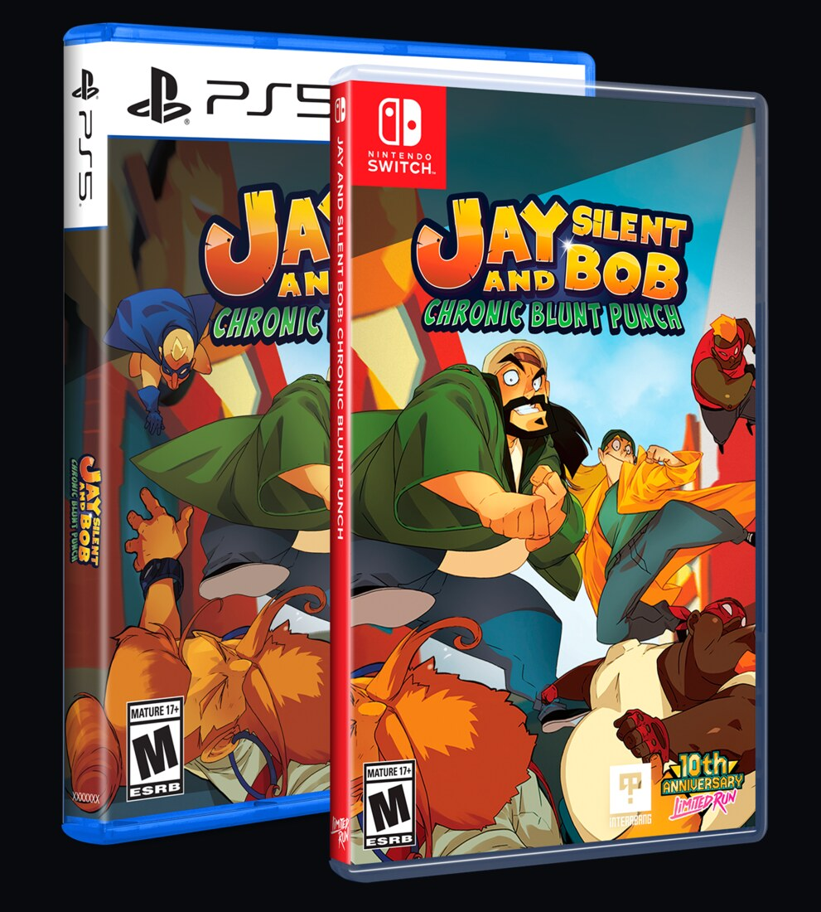
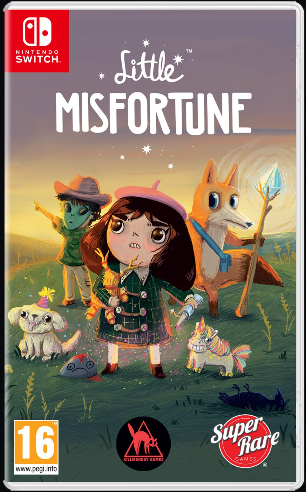
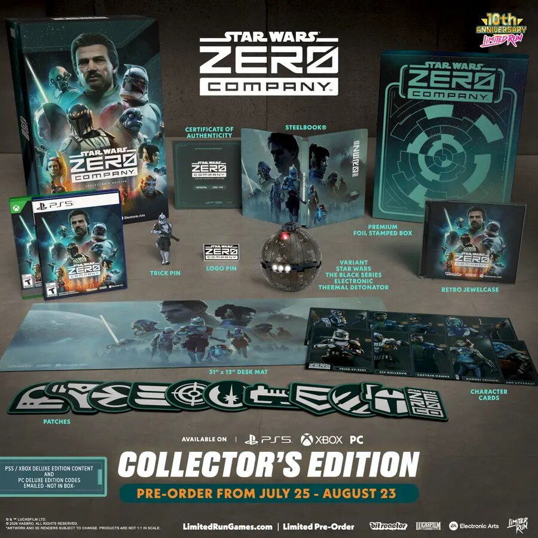
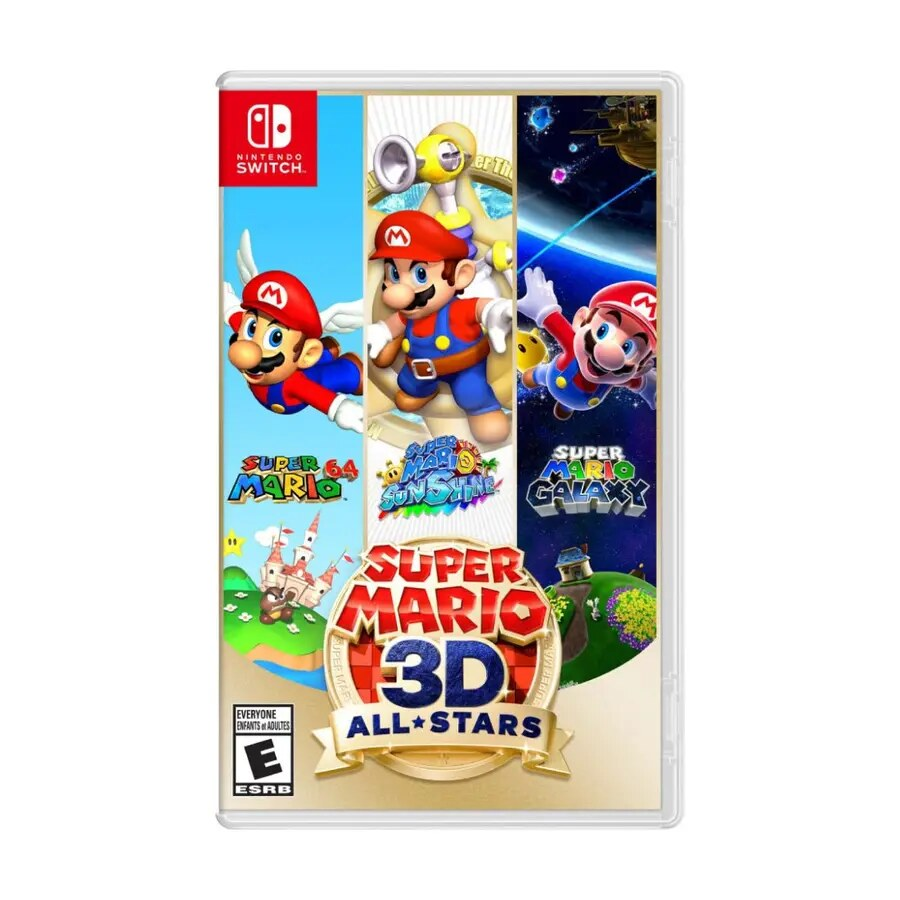

Nintendo Switch · Fixed retail sale
BuySuper Mario Odyssey
A 97 OpenCritic platformer at a normal physical-sale price. This earns a Buy on lasting quality, family appeal, complete base-game media, and price—not scarcity.
Timed sales, closing preorders, disclosed print caps, first-print variants, and last-chance stock—ranked so a deadline informs the decision without making it for you.

A 97 OpenCritic platformer at a normal physical-sale price. This earns a Buy on lasting quality, family appeal, complete base-game media, and price—not scarcity.

A 91 OpenCritic racing benchmark with complete offline base-game play. The current physical price is sensible; do not confuse this standard cartridge with bundles that package downloadable DLC.

The best current Vault fit. It is already a supported cult exception on the main watchlist, the standard edition is near retail, and Limited Run explicitly says the in-hand stock is extremely limited. Prefer this over any oversized collector box.

The visible first-print package and iconic source game create a credible collector signal. Keep this outside the 9/10 list until remake reviews arrive, and treat cartridge completeness as unresolved until Nintendo or preservation testing confirms it.

The deadline is real, but the game lacks the review consensus or established cult evidence required here. Scarcity alone is not a reason to order.

The series pedigree is elite, but this unreviewed finale is not preservation-complete. Consider the normal Day One edition if you want the trilogy physically; do not upgrade solely for preorder pressure.
Pass on this format for preservation. The box contains a download key rather than the game, so wait for any later complete-cartridge revision.

The supply signal is unusually clear, but the game’s mixed critical reception does not meet the quality bar. This remains a pass despite the low-stock percentage.

PlayStation 5 · Limited RunThe $299.99 preorder closed September 13, 2026 at 11:59 PM ET. The page still carried a Last Chance label during verification, but the published cutoff has passed. Verdict remains Pass: an expensive collector box for an unproven game did not satisfy the quality-first rule.

Nintendo Switch · Timed anniversary releaseThe compilation contains Super Mario 64, Super Mario Sunshine, and Super Mario Galaxy. It launched September 18, 2020; Nintendo ended digital sales and physical shipments on March 31, 2021, with retail copies continuing only while supplies lasted.
Collector lesson: a fixed end date plus universally recognized games, a first-party franchise, and a normal retail entry price created a much stronger opportunity than artificial scarcity attached to an unknown game.
Buy means proven quality, meaningful scarcity, correct region/media, and a near-retail price. Consider means the physical object matters but reviews or supply evidence remain incomplete. Pass means the deadline is real but price, quality, or preservation value is not strong enough. Deadline alerts remain separate from the main 9/10 watchlist until the game itself qualifies.